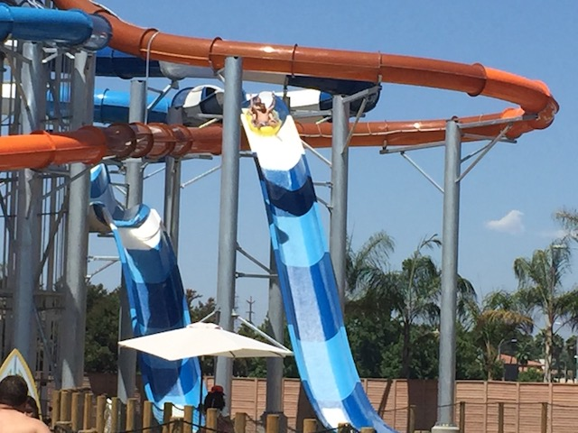
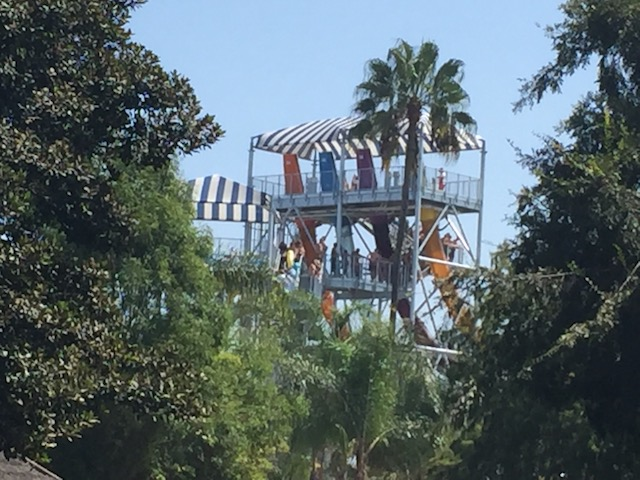

| |
Shore Break Review

We're at the Shore Break slide complex. Now, this actually features six water slides. Two tube slides, and four trap door slides. So let's get reviewing them. We'll start out with the two tube slides. You go, pop your tube in the water, and away you go. You start out going through a couple of turns. Nothing really intense. Just cruising in the dark, floating along some turns. But alas! We see a light. We head on out, and head on down. One of the slides goes down a double dip, giving you a tiny amount of airtime heading down, while the other one is just one big drop into the pool for you to glide across. I prefer the big drop one for now, but maybe if I was in a double tube, the double down one might have more airtime and be more fun. OK. Those were the two tube slides. Now let's take a look at the four trap door slides. They technically all have different layouts. But for the most part, they're mostly the same and I assume they all feel mostly the same. So it doesn't matter which one you do. Yellow, Purple, Blue, Orange, doesn't matter which one. Get in the trap door, and BAM!!! The floor drops out and you head on down. You head down and swoop out. Kind of like the Helix Trap Doors. Crap. Please tell me this isn't going to waterboard like those. We then go through a bunch of twisty stuff. And actually, it's a ton of fun. You get a lot of swining action heading on down. YAY!!! And SPLASH!!! You emerge out of it. I didn't have high expectations as this is the second smallest trap door I've done, only being beaten out by the Aqua Dunk on the Disney Magic Cruise. And I was worried about the waterboarding that happens on the helix ones. But surprisngly, there's none of that. It's just a really fun set of slides. And thanks to being 4 of them, it moves the line.
7/10 for the Tube Slides
8/10 for the Trap Door Slides
Location: Knotts Soak City
Opened: 2017
Built by: White Water Slides
Last Ridden: August 4, 2019
Shore Break Photos


Home
|